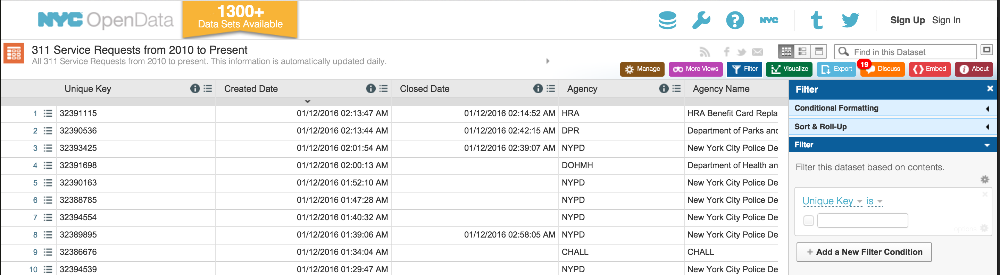
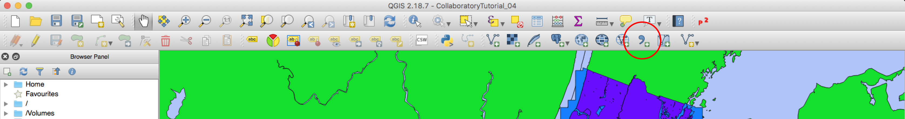
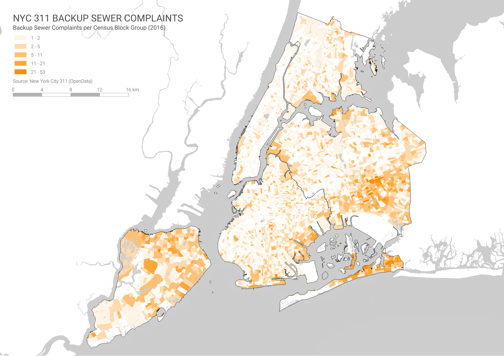

Datasets
To create this map we will be using the following datasets:
Boroughs - New York City boroughs. Download from NYC Planning - Open Data. Choose "Borough Boundaries (Clipped to Shoreline)", under "Borough Boundaries & Community Districts".
Census Block Groups - New York State census block groups. Download from U.S. Census Bureau - Tiger/Line Shapefiles. Select
2016andBlock Groups, and clickSubmit. Then, selectNew Yorkas the state and clickDownload.Hydrography - New York City hydrography. Download from NYC OpenData. Once you get to the NYC OpenData page, click
Exportand choose theShapefileformat.Hydrography U.S. - United States hydrography. Download from the Bureau of Transportation Statistics. When you get to the Bureau of Transportation Statistics page click on the Hydrographic Features
ZIPfile.States - U.S. State Boundaries. Download from the Bureau of Transportation Statistics. When you get to the Bureau of Transportation Statistics page click on the U.S. State Boundaries
ZIPfile.
About 311 Data
The main dataset we will be using in this tutorial is based on 311 data. For those of you who don't know, 311 is a service provided by the city of New York where people can call in (dialing 311) and submit complaints or ask questions about living in the city (the service also accepts complaints online). Some of the most popular complaints filed through 311 are about parking, noise, garbage, rodents, dead or damaged trees, air quality, construction permits, graffiti, homelessness, street conditions, taxis and water quality. There are other categories and each one of these has it's own subcategories. Furthermore, each entry in the dataset comes with the following fields (amongst others):
Created date
Closed date
Agency
Complaint type
Descriptor
Location type
Incident zip code
Incident address
Street name
City
Landmark
Facility type
Status
Due date
Resolution description
Community board
X and Y coordinates
Latitude and longitude
As you can see, the dataset is very interesting and a great resource for anyone studying New York. Nevertheless, a word of caution is necessary: many people use this dataset to describe and analyze conditions in New York; however, the 311 data doesn't describe the city, it describes the complaints people file, it is not about the city, it is about the complaints, and even though the complaints might tell us something about the city, the distinction is crucial. Every dataset has its own biases and the 311 dataset has very strong ones: it collects data ONLY about the people who complain and ONLY about what they choose to complain about. Again, this dataset is much more about the complaints and the people who complain than about the conditions in the city. There is no 1 to 1 relationship between the 311 complaints and the conditions in the ground. That being said, though, it is still a great resource and very fun to play with. You can find out more about the 311 service here.
Filtering and Downloading 311 Data
The first step in this tutorial is to select, filter and download the 311 data. The NYC OpenData portal is a great resource for data related to New York City and it provides an easy way of accessing 311 data. In it's search bar type
311and it should take you to a list of datasets related to 311 data. The one we are looking for is called311 Service Requests from 2010 to Present. Once you click there , selectView Datafrom theExplore Datadropdown menu.Once you've accessed the dataset you will see something like this:

Here, we need to filter the database to download only the complaints related to the sewer system for 2016. You could attempt to download records for a longer period of time, but the files might be too large. To filter the data do the following:
On the right-hand panel, where it says "Filter", create a small query using the drop-down menus. Where it says
Unique Key, change it toComplaint Type. Keep theisand then type in "Sewer" in the space below (The query should read "Complaint type is sewer". Make sure there is a check-mark next to the word "sewer". You will see how the dataset is filtered and you only get the complaints of type "Sewer".Next, click on
Add a New Filter Conditionand create another query that readsCreated Dateis between"01/1/2016 12:00:00 AM" and "1/1/2017 12:00:00 AM". You should now see the data only for "Sewer" complaints created in 2016.You should see something like this:
Finally, click on the
Exportbutton at the top right-hand corner of the site and choose theCSV(comma separated values) format. Your file should start downloading then.If you open your .csv file in Excel you will see that there are about 33,000 records and that they have both X and Y coordinates and Latitude and Longitude. In the next steps we will use these fields to add the 311 data to a QGIS map.
Adding Point Data to QGIS
First, open a new map in QGIS and add the following layers (links at the beginning of this tutorial). Remember to add the boroughs first so that the map takes on the right projection.
Boroughs
Hydrography
Hydrography U.S.
States
Organize your layers so that you have the water for New York City on top, then boroughs, then the water for the U.S. and finally the states.
Remember to create a definition query for the Hydrology U.S. layer to display only the water features (for a recap on how to do this see the Definition Queries section of Tutorial 01).
Now, to add the CSV file we downloaded, click on the
Add Delimited Text Layerbutton on the top toolbar.

In the menu that comes up, look for your .csv (311 data) file. Once you've selected your file QGIS will automatically select some presets. You should have the following options selected:
File format:
CSV (comma separated values)- this is the format our data is in: each value is separated by a comma.Record options:
First record has field names- the first row of our file contains the field names.Geometry definition:
Point coordinates- our data has latitude and longitude data.X field:
Longitudeand Y field:Latitude- these are the columns in our dataset that contain our location coordinatesYour menu should look something like this:
Once you click
OKyou might get a warning that says that x number of records were discarded because they didn't have geometry definitions. ClickClose. There might be some records in the dataset that we downloaded that for some reason didn't include location data.Next, QGIS will ask you to select a coordinate reference system (map projection) for this layer. Since we are adding this data based on the latitude and longitude information (decimal degrees, as opposed to feet) we need to select the
WGS 84, which is the coordinate system that will correctly interpret this data. You will find it underGeographic Coordinate Systems. You will find more information on this coordinate system here. Once you select the correct coordinate system, your points will appear on the map. If you don't see your points, it might be because they were added underneath one of the other layers. Make sure the new points layers is on top of the other ones.Even though your points are already on the map, this is just a temporary layer. If you remove the layer, you will need to go through the whole importing process to add them again. To avoid this, we need to export the layer as a shapefile.
However before you export it, you need to select only the records that have actual coordinate data. If you open the attribute table and look at the
LatitudeorLongitudefields you will notice that some entries don't have any geographic data (they areNull). We need, therefore, to select only the features that have geographic information and export only those:Open the attribute table and click on the
Select features using and expressionbutton.In this menu we will construct a query selecting only the features that have a
Nullvalue for latitude or longitude (and then we will invert that selection to get all the records that have geographic attributes and export those as a new layer).The selecting by expression menu has three different panels: the left-hand one is where you will construct your query; the middle one is where you will find the different functions, operator and, more importantly, the attribute table fields; and the right-hand panel will have a description of whatever you select in the middle panel.
To build the query, expand the
Fields and Valuesdrop-down menu in the middle panel and double-click onLatitude. You will notice the "Latitude" is added to the left-hand panel. Now type "IS NULL" after that. This means that we will select only the records where the field "Latitude" has aNullvalue.Now click on the
Selectbutton at the bottom right corner.Once you've selected the
Nullrecords, close theSelect by expressionwindow (click theClosebutton). At the top of the attribute table you should read that there are around 1,091 features selected.Now, switch the selection, so that we only select the records that have correct geographic data. To do this press the
Invert Selectionbutton at the top:Now you should have all the records that have latitude and longitude selected and we can proceed to export them as a shapefile.
Close the attribute table, right-click on the 311 layer and select
Save As...In the following menu choose:
Format:
ESRI Shapefile- this is the same format of our other layers.Save as: choose the appropriate location and name for your file.
CRS:
EPSG:102718 - NAD_1983_StatePlane_New_York_Long_Island_FIPS_3104_Feet- this is the coordinate system we are working with and we want this layer to have the same one.Make sure you are checking the option that says
Save only selected features.Uncheck
Skip attribute creation- you still want to retain the attributes associated with each point.Check
Add saved file to map- so that once you export the layer, the layer is added to your map.Once you export your layer (and it's automatically added to your map) you can remove the original one by right-clicking and choosing
Remove.
Creating a Qualitative Map of 311 Sewage Complaints
From here, creating a qualitative map of 311 sewage complaints is fairly easy: we just need to symbolize each type of complaint with a different color using the Descriptor field in the data. This is similar to what we did in the Creating a Basic Map tutorial with the different flood zones:
Right-click on the 311 data layer and choose
Properties.In the
Styletab, change the drop-down menu that saysSingle SymboltoCategorizedand then in theColumnmenu selectDescriptor(this is the field we will symbolize).Now click on the
Classifybutton at the bottom and you will get all the different sub-categories.Lastly, you should change the appearance of the dots: adjust their size, stroke and fill color.
Once you've adjusted that, click
OK.Finally, if you were finishing your map here you would need to change the appearance of the other layers, create a print composer, add a scale bar, legend, title, source and brief description, and export your map as a PDF file.
Creating a Quantitative Map of 311 Sewage Complaints
Finally, we will select a subset of the 311 data and join it to New York City's census block groups, creating a map that displays the number of complaints per block group. This is very useful if, for example, you want to identify what parts of the city receive the highest number of sewer backup complaints.
However, when performing statistical analysis with these kinds of maps you have should be aware of the modifiable areal unit problem: basically, the problem is that we are arbitrarily choosing to aggregate the complaints by census block groups, but we could also aggregate them by neighborhood or community district, which could very well yield different results. In addition, some block groups are larger than others, or more densely populated, and thus, probably generate more complaints. Therefore, a better version of this map would display complaints per person instead of just total number of complaints. However, for the sake of brevity we will just do complaints per block group.
First, let's create a subset of the 311 data with only "Sewer Backup" complaints. Just like we selected the records that had a
Nullvalue in theLatitudefield, we will select the ones that haveSewer Backupin theDescriptor.In the attribute table go to the
Select features using and expressionwindow.There, write the expression
"Descriptor" = 'Sewer Backup (Use Comments) (SA)'to select only the complaints related to sewage backup. You should have around 12,277 complaints selected.Now, export those selected complaints as its own shapefile by right-clicking on the layer and choosing
Save As....Once you've exported the selected complaints and added them to your map, remove the layer with all the 311 complaints.
Now let's add the layer you downloaded containing all the census block groups and prepare it for the join.
Once you add it you will notice that it contains all block groups for New York State, so the first thing we need to do is select only the block groups for the city.
If you open the attribute table you will see a field called
COUNTYFPwhich contains the code for the county in which each block group is located. Using this field we will select the block groups located in any of New York City's five counties.In the
Select features using and expressionmenu write the following expression:"COUNTYFP" = '005' or "COUNTYFP" = '047' or "COUNTYFP" = '061' or "COUNTYFP" = '081' or "COUNTYFP" = '085'(those are the codes for New York City's five boroughs). This will select any feature that has any of those codes in itsCOUNTYFPfield. Note that every time after theoryou need to write the full condition again, and that the value for the county code is under single quotation marks: this is because the value is a string (a text value, not a number); if it was a number you would simply type5; instead, since it's a string, you have to type'005'and it behaves like text.Once you have those census block groups selected, go ahead and export them as their own shapefile. However, it is crucial that in the
Save As...menu you choose the same CRS as the complaint layer (EPSG:102718 - NAD_1983_StatePlane_New_York_Long_Island_FIPS_3104_Feet), otherwise you won't be able to join them.Finally, add them to the map and remove the previous one.
Now we are ready to join the complaint data to the census block groups:
To join point into the polygons that contain them click on
Vector,Analysis Tools,Count points in polygon....In the
Count points in polygon...menu choose the following options:Polygons: Block group layer.
Points: Complaints layer.
Count field name: the default (NUMPOINTS) is fine.
Click
Run.After the operation runs, you should get a new layer called
Count. To verify that everything worked open its attribute table and scroll to the last field, calledNUMPOINTS. It should contain some zeros but it should also contain some other values. If it just contains zeros something went wrong, most probably you were using layers with different coordinate reference systems. If this happens, try verifying the coordinate reference systems in thePropertiestab of the layers and if indeed they are different, try re-exporting one of them to make them match.Finally, once you have your new layer with the count, you have to export it as a new shapefile.
The last step is to symbolize the values in this new layer and create the map:
First, in order to just symbolize the block groups that have one or more complaints you should create a definition query to show only these ones:
Right-click on the layer and in the
Propertiesoption go to theGeneraltab and click on theQuery Builderbutton.Here, write the following expression:
"NUMPOINTS" > 0. This will ensure that only the block groups with one or more complaints are visisble.Now, to symbolize by quantity right-click on the layer and choose
Properties.In the
Styledropdown menu chooseGraduated.In the
Columndropdown menu choose theNUMPOINTSfield to symbolize and click on theClassifybutton to load the values.You will notice that QGIS automatically classifies the values into 5 categories. Also, if you look at the
Modedropdown menu below the classification you will see that the software uses anEqual Intervalmethod for this classification. However, if you clickOKand look at the resulting map you will notice that most block groups fall within the first group, the one that goes from 0 - 10.60 and that very few are fall in the other groups. In fact, it seems like there are a handful of block groups with more than 40 complaints (some of them in Queens), which are skewing the whole classification method upwards. An ideal classification method should instead display the full internal variation within the dataset.To change classification method go back to the properties and change the classification mode to
Natural Breaks (Jenks)which deals better with datasets that are not normally distributed. You can find out more about this classification method here.You can change your color ramp or the individual colors or strokes of each of the classes. You can also change the number of classes the data is divided into but note that normally, we can only really differentiate between 5 or 6 classes.
Once you are done with the classification, click
OKto apply it to the layer and see your results on the map.Once you are finished with this go ahead and adjust colors, strokes and layer order. And finally, create a print composer, add a legend, title, explanation, source and a scale bar, and export your map as a PDF file. Your final map should look something like this:
